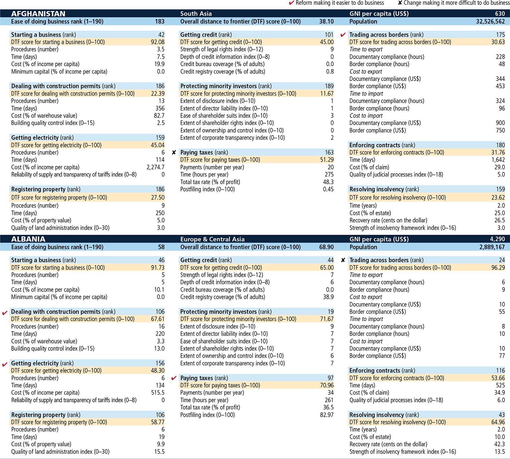

Note: Most indicator sets refer to a case scenario in the largest business city of an economy, though for 11 economies the data are a population-weighted average for the two largest business cities. For some indicators a result of “no practice” may be recorded for an economy; see the data notes for more details. In starting a business, procedures (number), time (days) and cost (% of income per capita) are calculated as the average of both men and women. For the postfiling index, a result of “not applicable” may be recorded for an economy.